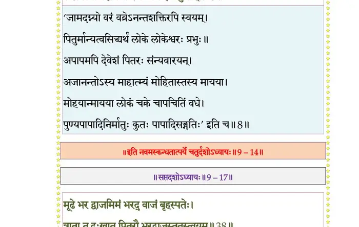

स्कन्ध 9 · अध्याय 14
श्लोक १
श्रीशुक उवाच–
पित्रोपशिक्षितो रामस्तथेति कुरुनन्दन ।
संवत्सरं तीर्थचर्यां चरित्वाऽऽश्रममाव्रजत्।। १ ।।
पित्रोपशिक्षितो रामस्तथेति कुरुनन्दन ।
संवत्सरं तीर्थचर्यां चरित्वाऽऽश्रममाव्रजत्।। १ ।।
श्लोक २
कदाचिद् रेणुका याता गङ्गायां पद्ममालिनम् ।
गन्धर्वराजं क्रीडन्तमप्सरोभिरपश्यत ।। २ ।।
गन्धर्वराजं क्रीडन्तमप्सरोभिरपश्यत ।। २ ।।
श्लोक ३
विलोकयन्ती क्रीडन्तमुदकार्थं नदीं गता ।
होमवेलां न सस्मार किञ्चिच्चित्ररथस्पृहा।। ३ ।।
होमवेलां न सस्मार किञ्चिच्चित्ररथस्पृहा।। ३ ।।
श्लोक ४
कालात्ययं तं विलोक्य मुनेः शापविशङ्किता ।
आगत्य कलशं तस्थौ पुरोधाय कृताञ्जलिः ।। ४ ।।
आगत्य कलशं तस्थौ पुरोधाय कृताञ्जलिः ।। ४ ।।
श्लोक ५
व्यभिचारं मुनिर्ज्ञात्वा पत्न्याः प्रकुपितोऽब्रवीत् ।
घ्नतैनां पुत्रकाः पापामित्युक्तास्तां न चक्रिरे ।। ५ ।।
घ्नतैनां पुत्रकाः पापामित्युक्तास्तां न चक्रिरे ।। ५ ।।
श्लोक ६
रामः सञ्जोदितः पित्रा भ्रातॄन् मात्रा सहावधीत् ।
प्रभावज्ञो मुनेः सम्यक् समाधेस्तपसश्च सः ।। ६ ।।
प्रभावज्ञो मुनेः सम्यक् समाधेस्तपसश्च सः ।। ६ ।।
श्लोक ७
वरेण छन्दयामास प्रीतः सत्यवतीसुतः ।
वव्रे हतानां रामोऽपि जीवितं चास्मृतिं वधे ।। ७ ।।
वव्रे हतानां रामोऽपि जीवितं चास्मृतिं वधे ।। ७ ।।
भागवततात्पर्यनिर्णय
श्लोक ८
उत्तस्थुस्ते कुशलिनो निद्रापाय इवाञ्जसा ।
पितुर्विद्वांस्तपोवीर्यं रामश्चक्रे सुहृद्वधम् ।। ८ ।।
पितुर्विद्वांस्तपोवीर्यं रामश्चक्रे सुहृद्वधम् ।। ८ ।।
श्लोक ९
येऽर्जुनस्य सुता राजन् स्मरन्तः स्म पितुर्वधम् ।
रामवीर्यपराभूता लेभिरे शर्म न क्वचित् ।। ९ ।।
रामवीर्यपराभूता लेभिरे शर्म न क्वचित् ।। ९ ।।
श्लोक १०
एकदाऽऽश्रमतो रामे सभ्रातरि वनं गते ।
वैरं सिषाधयिषवो लब्धच्छिद्रा उपागमन् ।। १० ।।
वैरं सिषाधयिषवो लब्धच्छिद्रा उपागमन् ।। १० ।।
श्लोक ११
दृष्ट्वाऽग्न्यागार आसीनमावेशितधियं मुनिम् ।
भगवत्युत्तमश्लोके जघ्नुस्ते पापनिश्चयाः ।। ११ ।।
भगवत्युत्तमश्लोके जघ्नुस्ते पापनिश्चयाः ।। ११ ।।
श्लोक १२
याचामानाः कृपणया राममात्राऽतिदारुणाः ।
प्रसह्य शिर उत्कृत्य जग्मुस्ते क्षत्रबन्धवः ।। १२ ।।
प्रसह्य शिर उत्कृत्य जग्मुस्ते क्षत्रबन्धवः ।। १२ ।।
श्लोक १३
रेणुका दुःखशोकार्ता निघ्नन्त्यात्मानमात्मना ।
राम रामेति तातेति विचुक्रोशोच्चकैः सती ।। १३ ।।
राम रामेति तातेति विचुक्रोशोच्चकैः सती ।। १३ ।।
श्लोक १४
तदुपश्रुत्य दूरस्था हा रामेत्यार्तवत्स्वरम् ।
त्वरयाऽऽश्रममासाद्य ददृशुः पितरं हतम् ।। १४ ।।
त्वरयाऽऽश्रममासाद्य ददृशुः पितरं हतम् ।। १४ ।।
श्लोक १५
ते दुःखरोषामर्षार्तिशोकवेगविमोहिताः ।
हा तात साधो धर्मिष्ठ त्यक्त्वाऽस्मान् स्वर्गतो भवान्।। १५ ।।
हा तात साधो धर्मिष्ठ त्यक्त्वाऽस्मान् स्वर्गतो भवान्।। १५ ।।
श्लोक १६
विलप्यैवं पितुर्देहं निधाय भ्रातृषु स्वयम् ।
प्रगृह्य परशुं रामः क्षत्रान्ताय मनो दधे ।। १६ ।।
प्रगृह्य परशुं रामः क्षत्रान्ताय मनो दधे ।। १६ ।।
श्लोक १७
गत्वा माहिष्मतीं रामो ब्रह्मघ्नविहतश्रियम् ।
तस्यां स शीर्षभी राज्ञां मध्ये चक्रे महागिरिम् ।। १७ ।।
तस्यां स शीर्षभी राज्ञां मध्ये चक्रे महागिरिम् ।। १७ ।।
श्लोक १८
तद्रक्तेन नदीं घोरामब्रह्मण्यभयावहाम् ।
हेतुं कृत्वा पितृवधं क्षत्रेऽमङ्गलकारिणि ।। १८ ।।
हेतुं कृत्वा पितृवधं क्षत्रेऽमङ्गलकारिणि ।। १८ ।।
श्लोक १९
त्रिः सप्तकृत्वः पृथिवीं कृत्वा निःक्षत्रियां विभुः ।
स्यमन्तपञ्चके चक्रे शोणितोदान् ह्रदान् नव ।। १९ ।।
स्यमन्तपञ्चके चक्रे शोणितोदान् ह्रदान् नव ।। १९ ।।
श्लोक २०
पितुः कायेन सन्धाय शिर आधाय बर्हिषि ।
सर्वदेवमयं देवमात्मनमयजन्मखैः ।। २० ।।
सर्वदेवमयं देवमात्मनमयजन्मखैः ।। २० ।।
श्लोक २१
ददौ प्राचीं दिशं होत्रे ब्रह्मणे दक्षिणां दिशम् ।
अध्वर्यवे प्रतीचीं वा उद्गात्र उत्तरां दिशम् ।। २१ ।।
अध्वर्यवे प्रतीचीं वा उद्गात्र उत्तरां दिशम् ।। २१ ।।
श्लोक २२
अन्येभ्योऽवान्तरदिशः काश्यपाय च मध्यतः ।
आर्यावर्तमुपद्रष्ट्रे सदस्येभ्यस्ततः परम् ।। २२ ।।
आर्यावर्तमुपद्रष्ट्रे सदस्येभ्यस्ततः परम् ।। २२ ।।
श्लोक २३
ततश्चावभृथस्नानविधूताशेषकिल्बिषः ।
सरस्वत्यां ब्रह्मनद्यां रेजे व्यभ्र इवांशुमान् ।। २३ ।।
सरस्वत्यां ब्रह्मनद्यां रेजे व्यभ्र इवांशुमान् ।। २३ ।।
भागवततात्पर्यनिर्णय

श्लोक २४
स्वदेहं जमदग्निस्तु लब्ध्वा सञ्ज्ञानलक्षणम् ।
ऋषीणां मण्डले सोऽभूत् सप्तमो रामपूजितः ।। २४ ।।
ऋषीणां मण्डले सोऽभूत् सप्तमो रामपूजितः ।। २४ ।।
श्लोक २५
जामदग्न्योऽपि भगवान् रामः कमललोचनः ।
आगामिन्यन्तरे राजन् वर्तयिष्यति वै बृहत् ।। २५ ।।
आगामिन्यन्तरे राजन् वर्तयिष्यति वै बृहत् ।। २५ ।।
श्लोक २६
आस्तेऽद्यापि महेन्द्राद्रौ न्यस्तदण्डः प्रशान्तधीः ।
उपगीयमानचरितः सिद्धगन्धर्वचारणैः ।। २६ ।।
उपगीयमानचरितः सिद्धगन्धर्वचारणैः ।। २६ ।।
श्लोक २७
एवं भृगुषु विश्वात्मा भगवान् हरिरीश्वरः ।
अवतीर्य परं भारं भुवोऽहन् बहुशो नृपान् ।। २७ ।।
अवतीर्य परं भारं भुवोऽहन् बहुशो नृपान् ।। २७ ।।
श्लोक २८
गाधेरभून्महातेजाः समिद्ध इव पावकः ।
तपसा क्षात्रमुत्सृज्य यो लेभे ब्रह्मवर्चसम् ।। २८ ।।
तपसा क्षात्रमुत्सृज्य यो लेभे ब्रह्मवर्चसम् ।। २८ ।।
श्लोक २९
विश्वामित्रस्य चैवासन् पुत्रा एकशतं नृप ।
मध्यमस्तु मधुच्छन्दा माधुच्छन्दस एव ते ।। २९ ।।
मध्यमस्तु मधुच्छन्दा माधुच्छन्दस एव ते ।। २९ ।।
श्लोक ३०
पुत्रं कृत्वा शुनःशेपं देवरातं च भार्गवम् ।
आजीगर्तं सुतानाह ज्येष्ठ एष प्रकल्प्यताम् ।। ३० ।।
आजीगर्तं सुतानाह ज्येष्ठ एष प्रकल्प्यताम् ।। ३० ।।
श्लोक ३१
यो वै हरिश्चन्द्रमखे विक्रीतः पुरुषः पशुः ।
स्तुत्वा देवान् प्रजेशादीन् मुमुचे पाशबन्धनात् ।। ३१ ।।
स्तुत्वा देवान् प्रजेशादीन् मुमुचे पाशबन्धनात् ।। ३१ ।।
श्लोक ३२
यो रातो देवयजने देवैर्गाधिसुताय सः ।
देवरात इति ख्यातः शुनःशेपस्तु भार्गवः ।। ३२ ।।
देवरात इति ख्यातः शुनःशेपस्तु भार्गवः ।। ३२ ।।
श्लोक ३३
ये मधुच्छन्दसो ज्येष्ठाः कुशलं मेनिरे न तत् ।
अशपत् तान् मुनिः क्रुद्धो म्लेञ्छा भवत दुर्जनाः।। ३३ ।।
अशपत् तान् मुनिः क्रुद्धो म्लेञ्छा भवत दुर्जनाः।। ३३ ।।
श्लोक ३४
स होवाच मधुच्छन्दाः सार्धं पञ्चाशता ततः ।
यन्नो भवान् सञ्जानीते तस्मिंस्तिष्ठामहे वयम् ।। ३४ ।।
यन्नो भवान् सञ्जानीते तस्मिंस्तिष्ठामहे वयम् ।। ३४ ।।
श्लोक ३५
ज्येष्ठं मन्त्रदृशं चक्रुः त्वामन्वञ्चो वयं स्म हि ।
विश्वामित्रः सुतानाह वीरवन्तो भविष्यथ ।। ३५ ।।
विश्वामित्रः सुतानाह वीरवन्तो भविष्यथ ।। ३५ ।।
श्लोक ३६
ये मानं मेऽनुगृह्णन्तो वीरवन्तमकर्त मा ।
एष वः कौशिका वीरो देवरातस्तमन्वित ।। ३६ ।।
एष वः कौशिका वीरो देवरातस्तमन्वित ।। ३६ ।।
श्लोक ३७
अन्ये चाष्टकहारीता जयक्रतुमदादयः ।
एवं कौशिकगोत्रं तद् वैश्वामित्रैः पृथग्विधम् ।
प्रवरान्तरमापन्नं तद्धीत्येवं प्रकल्पितम् ।। ३७ ।।
एवं कौशिकगोत्रं तद् वैश्वामित्रैः पृथग्विधम् ।
प्रवरान्तरमापन्नं तद्धीत्येवं प्रकल्पितम् ।। ३७ ।।
श्लोक ३८
यः पुरूरवसः पुत्र आयुस्तस्याभवन् सुताः ।
नहुषः क्षत्रवृद्धश्च रजी रामश्च वीर्यवान् ।
अनेना इति राजेन्द्र क्षत्रवृद्धान्वयं शृणु ।। ३८ ।।
नहुषः क्षत्रवृद्धश्च रजी रामश्च वीर्यवान् ।
अनेना इति राजेन्द्र क्षत्रवृद्धान्वयं शृणु ।। ३८ ।।
श्लोक ३९
क्षत्रवृद्धसुतस्यासन् सुहोत्रस्यात्मजास्त्रयः ।
काश्यः कुशो गृत्समद इति गृत्समदादभूत् ।। ३९ ।।
काश्यः कुशो गृत्समद इति गृत्समदादभूत् ।। ३९ ।।
श्लोक ४०
शुनकः शौनको यस्य बह्वृचप्रवरो मुनिः ।
काश्यस्य काशिस्तत्पुत्रः सुराष्ट्रो दीर्घतमःपिता ।। ४० ।।
काश्यस्य काशिस्तत्पुत्रः सुराष्ट्रो दीर्घतमःपिता ।। ४० ।।
श्लोक ४१
धन्वन्तरिर्दीर्घतमस आयुर्वेदप्रवर्तकः ।
यज्ञभुग् वासुदेवांशः स्मृतिमात्रार्तिनाशनः ।। ४१ ।।
यज्ञभुग् वासुदेवांशः स्मृतिमात्रार्तिनाशनः ।। ४१ ।।
श्लोक ४२
तत्पुत्रः केतुमान् यस्य जज्ञे भीमरथस्ततः ।
दिवोदासो द्युमांस्तस्मात् प्रतर्दन इति स्मृतः ।। ४२ ।।
दिवोदासो द्युमांस्तस्मात् प्रतर्दन इति स्मृतः ।। ४२ ।।
श्लोक ४३
स एव शत्रुजिद्वत्सो ऋतध्वज इतीरितः ।
तथा कुवलयाश्वेति प्रोक्तोऽलर्कादयस्ततः ।। ४३ ।।
तथा कुवलयाश्वेति प्रोक्तोऽलर्कादयस्ततः ।। ४३ ।।
श्लोक ४४
षष्ठिवर्षसहस्त्राणि षष्ठिवर्षशतानि च ।
नालर्कादपरो राजा बुभुजे मेदिनीं युवा ।। ४४ ।।
नालर्कादपरो राजा बुभुजे मेदिनीं युवा ।। ४४ ।।
श्लोक ४५
अलर्कात् सन्ततिस्तस्मात् सुनीथोऽथ सुकेतनः ।
धर्मकेतुः सुतस्तस्मात् सत्यकेतुरजायत ।। ४५ ।।
धर्मकेतुः सुतस्तस्मात् सत्यकेतुरजायत ।। ४५ ।।
श्लोक ४६
धृष्टकेतुस्ततस्तस्मात् सुकुमारः क्षितीश्वरः ।
वीतिहोत्रोऽस्य भर्गोऽतो भार्गभूमिरभून्नृपः ।। ४६ ।।
वीतिहोत्रोऽस्य भर्गोऽतो भार्गभूमिरभून्नृपः ।। ४६ ।।
श्लोक ४७
इतीमे काश्यजा भूपाः क्षत्रवृद्धान्ववायिनः ।
रम्भस्य रभसः पुत्रो गम्भीरश्चक्रकस्ततः ।। ४७ ।।
रम्भस्य रभसः पुत्रो गम्भीरश्चक्रकस्ततः ।। ४७ ।।
श्लोक ४८
तस्य क्षेत्रे ब्रह्म जज्ञे शृणु वंशमनेनसः ।
शुद्धस्ततः शुचिस्तस्मात् त्रिककुद् धर्मसारथिः ।। ४८ ।।
शुद्धस्ततः शुचिस्तस्मात् त्रिककुद् धर्मसारथिः ।। ४८ ।।
श्लोक ४९
ततः शान्तरया जज्ञे कृतकृत्यः स आत्मवान् ।
रजेः पञ्चशतान्यासन् पुत्राणाममितौजसाम् ।। ४९ ।।
रजेः पञ्चशतान्यासन् पुत्राणाममितौजसाम् ।। ४९ ।।
श्लोक ५०
देवैरभ्यर्थितो दैत्यान् हत्वेन्द्रायाददाद् दिवम् ।
इन्द्रस्तस्मै पुनर्दत्वा गृहीत्वा चरणौ रजेः ।। ५० ।।
इन्द्रस्तस्मै पुनर्दत्वा गृहीत्वा चरणौ रजेः ।। ५० ।।
श्लोक ५१
आत्मानमर्थयामास प्रह्लादात् परिशङ्कितः ।
पितर्युपरते पुत्रा याचमानाय नो ददुः ।। ५१ ।।
पितर्युपरते पुत्रा याचमानाय नो ददुः ।। ५१ ।।
श्लोक ५२
त्रिविष्टपं महेन्द्राय यज्ञभागान् समाददुः ।
गुरुणा हूयमानेऽग्नौ बलभित् तनयान् रजेः ।। ५२ ।।
गुरुणा हूयमानेऽग्नौ बलभित् तनयान् रजेः ।। ५२ ।।
श्लोक ५३
अवधीद् भ्रांशितान् मार्गान्न कश्चिदवशेषितः ।
प्रतिक्षत्रः क्षत्रवृद्धात् सञ्जयस्तत्सुतो जयः ।। ५३ ।।
प्रतिक्षत्रः क्षत्रवृद्धात् सञ्जयस्तत्सुतो जयः ।। ५३ ।।
श्लोक ५४
ततः कृतः कृतस्यापि जज्ञे वीर्यधनस्ततः ।
सहदेवस्ततोऽहीनो जयत्सेनस्तु तत्सुतः ।। ५४ ।।
सहदेवस्ततोऽहीनो जयत्सेनस्तु तत्सुतः ।। ५४ ।।
श्लोक ५५
सङ्कृतिस्तस्य च जयः क्षत्रधर्मा महारथः ।
क्षत्रवृद्धान्वया भूपा इमे शृण्वथ नाहुषान् ।। ५५ ।।
क्षत्रवृद्धान्वया भूपा इमे शृण्वथ नाहुषान् ।। ५५ ।।
।। इति श्रीमद्भागवते नवमस्कन्धे चतुर्दशोऽध्यायः ।।